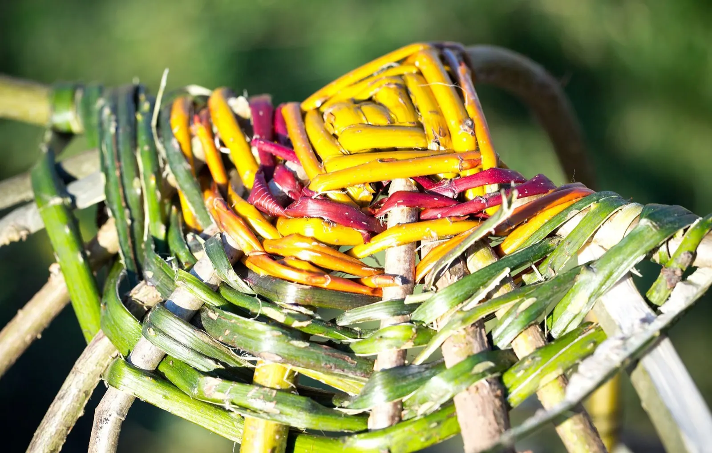
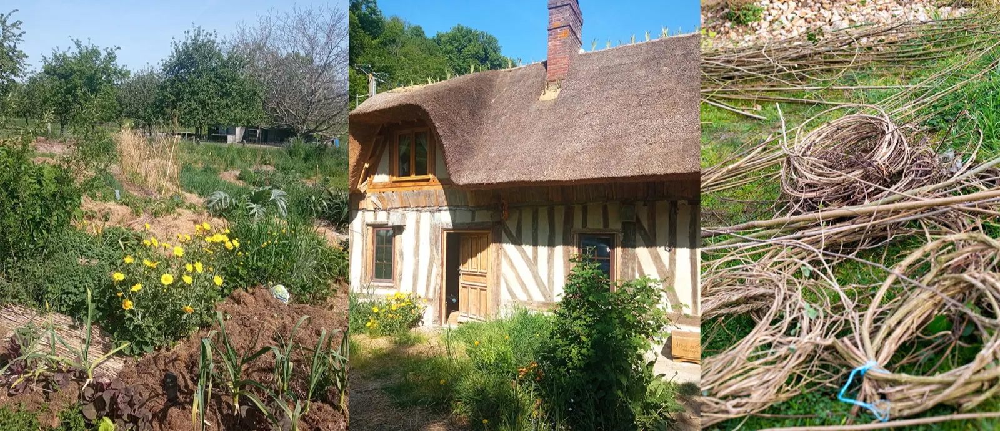
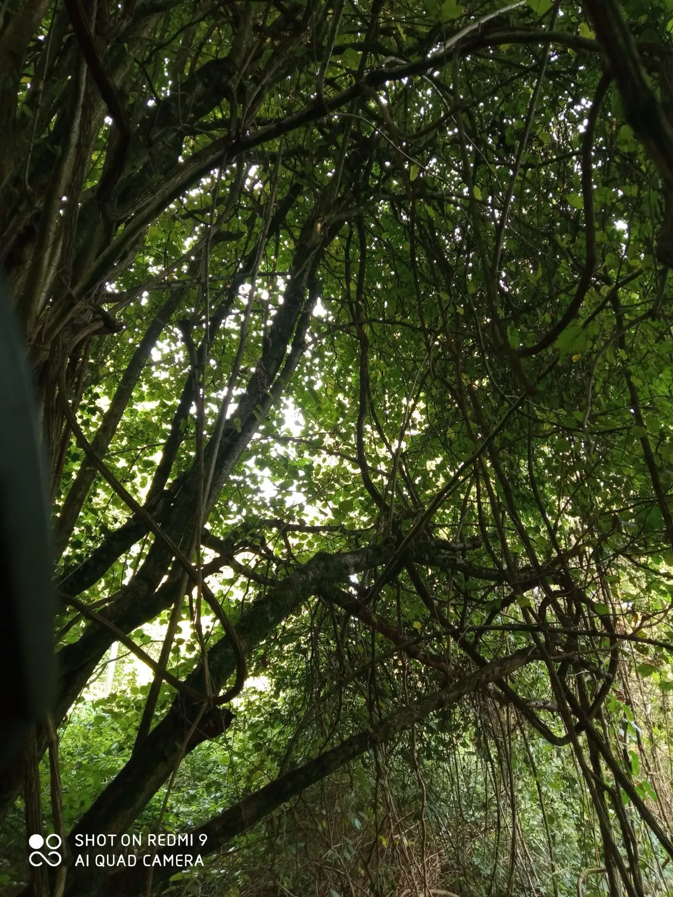
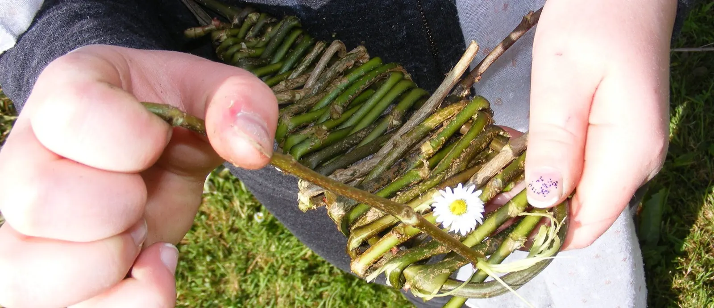
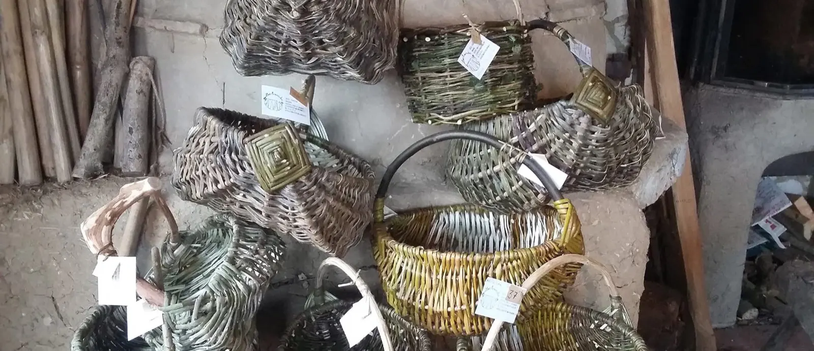
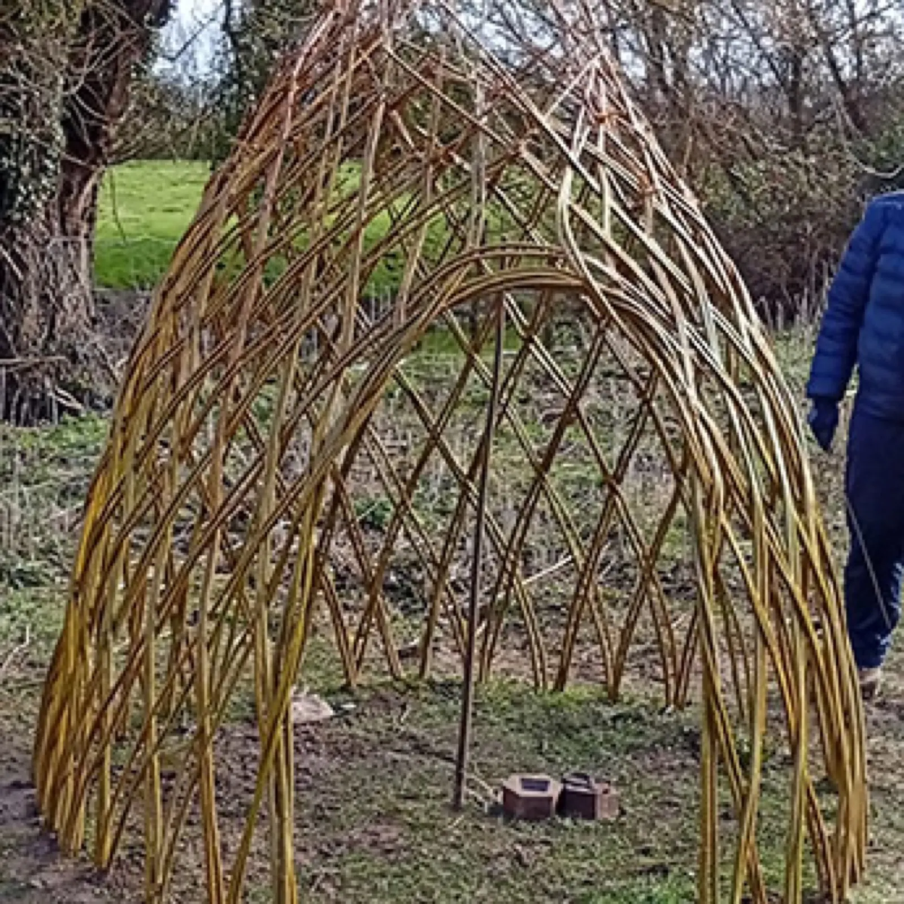
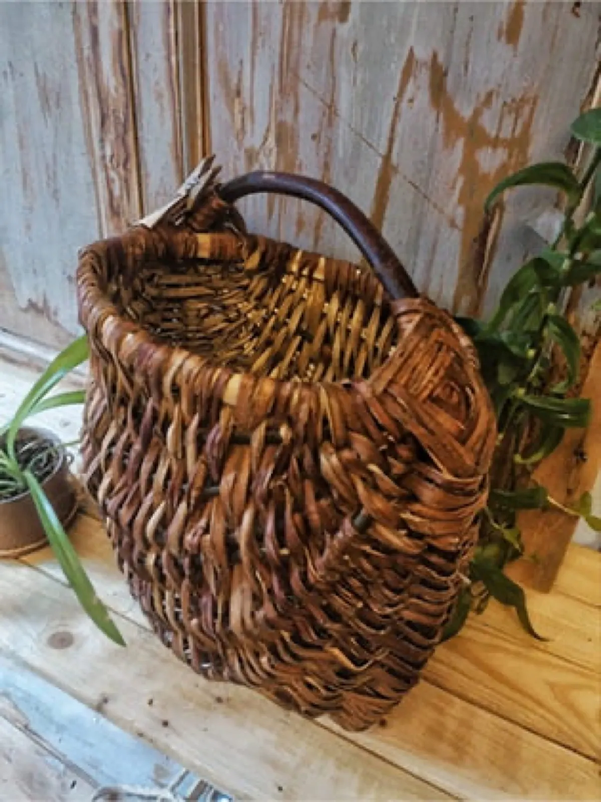
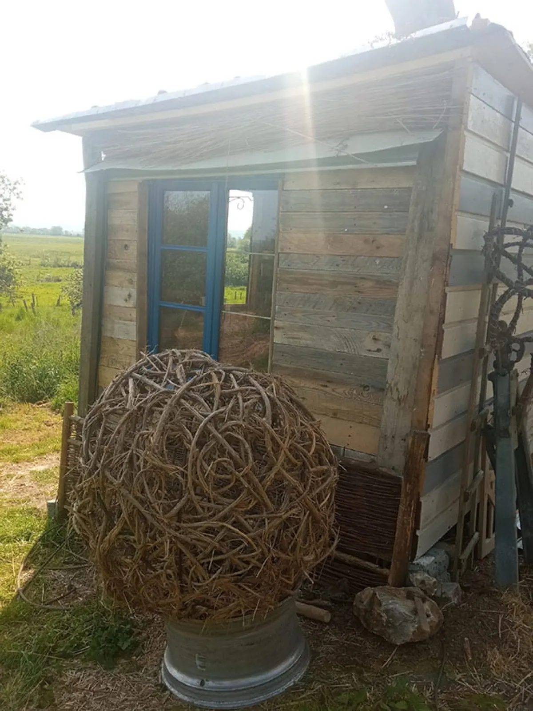
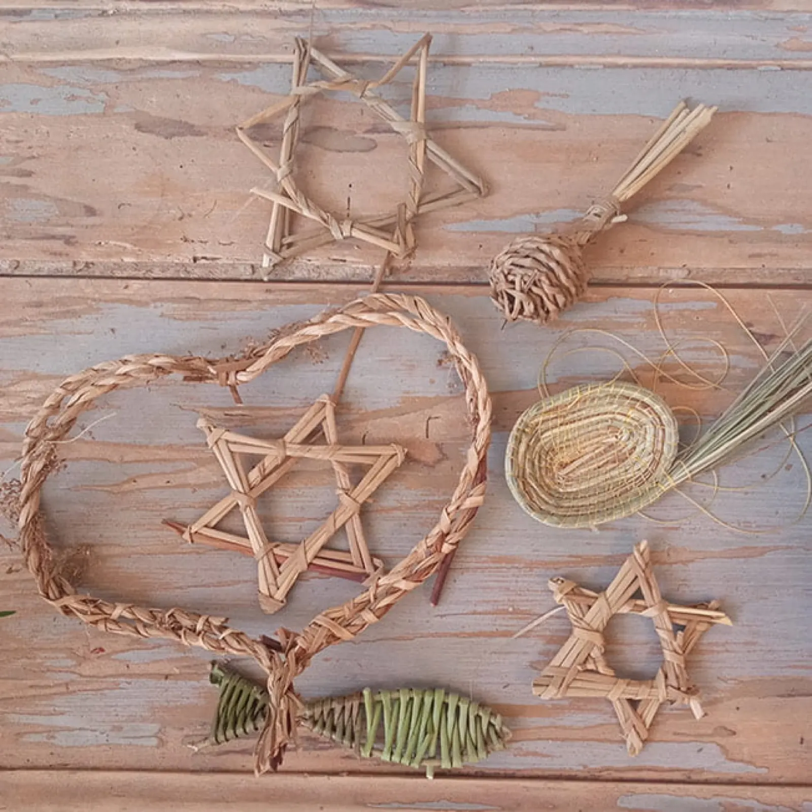

Vannerie sauvage dans le Marais Vernier

Ronce, lierre, clématite, saule, cornouiller : le Parc des boucles de la Seine regorge de végétaux pour la vannerie. Je les tresse dans une chaumière rénovée en chantiers participatifs, à 30 minutes de Honfleur, et je transmets le geste en stages.
- Marais-VernierParc des boucles de la Seine, dans l'Eure
- Vannière depuis 2013Formée auprès de Pierrick, vannier formateur
- De 9 h à 17 hStages à l'atelier, repas partagés
- 2 h de ParisEt 30 minutes de Honfleur


Une chaumière rénovée en chantiers participatifs
Fille de chaumiers et d'agriculteurs, je vis avec mes trois enfants à côté de mon atelier, dans une chaumière que j'ai entièrement rénovée de façon traditionnelle, avec l'aide d'amis et lors de chantiers participatifs.
J'aime tisser des liens avec d'autres acteurs sensibles à l'écologie et à l'éco-construction, et j'organise dès que c'est possible des ateliers collaboratifs. Autour de la maison, j'expérimente la permaculture et je récolte les végétaux de façon raisonnée.
« Je crois beaucoup à l'intelligence du travail collectif. »

Les stages
Initiation à plusieurs techniques, avec les végétaux de la saison. Nous récoltons ensemble pour apprendre à repérer les plantes et à cueillir de façon raisonnée ; pour gagner du temps, je mets aussi à disposition celles que j'ai déjà récoltées. Vous repartez avec votre panier.
De 9 h à 17 h, dans mon atelier.
Repas partagés : cuisine équipée d'un four et de plaques sur place.
Dormir sur place : hébergement à prix libre et conscient.
-
Vannerie au jardin
Trois jours pour apprendre à créer dehors avec le saule vivant : cabane, haie vivante en tressage régulier ou intuitif, plessage pour dessiner les espaces du jardin, et la tontine, un cône de plantation.
3, 4 et 5 février 2027 · complet190 €les 3 jours -
La vannerie sur arceau
Un panier de forme sur arceau : anse, bordure haute, yeux de dieu et côtes. Noisetier, châtaignier, saule, ronce, lierre et clématite.
21-22 novembre 20269-10 janvier 202720-21 mars 202795 €le week-end -
La vannerie sur fond plat
Un panier monté sur un fond plat, en deux jours.
5-6 décembre 2026 · complet20-21 février 202727-28 mars 202795 €le week-end -
Le Zarzo en saule
La technique de tressage du Zarzo, en saule. Groupe de 6 personnes au plus.
Samedi 13 février 2027Mercredi 17 mars 202790 €la journée -
La vannerie intuitive en clématite
Une journée de tressage intuitif, en clématite.
Dimanche 7 février 202760 €la journée -
La vannerie spiralée
La technique de la vannerie spiralée, sur un week-end.
12-13 juin 202795 €le week-end -
Création de luminaires
Un luminaire en vannerie, en deux jours. Matériel électrique inclus.
95 €les deux jours
Aucune de ces dates ne vous convient ? Prévoyons un temps en semaine dans mon atelier, à 70 € la journée par personne.
Paniers, décors et animations

Paniers et corbeilles
La nature est si créative que je m'en remets complètement au végétal, pour des pièces uniques qui répondent à un besoin urgent : se passer des sacs plastiques. On les trouve dans quelques boutiques locales.
Décoration intérieure et extérieure
Jardins et parcs, terrasses, haie vivante, siège hamac, plessis, lustres, vitrines, restaurants. Formée à la soudure, j'habille aussi de végétal de grosses structures métalliques.
Collectivités, parcs, écoles
Des animations pour les petits comme pour les grands : la pratique, l'histoire de la vannerie, le respect de la nature et la créativité de chacun.




Venir tresser au Marais-Vernier
Appelez-moi (sans laisser de message), envoyez-moi un SMS ou un e-mail : je vous réponds pour un stage, une commande ou une animation.
- Atelier
- 23 bout d'Aval
27680 Marais-Vernier - Téléphone et SMS
- 06 29 46 39 43
- Suivre l'atelier